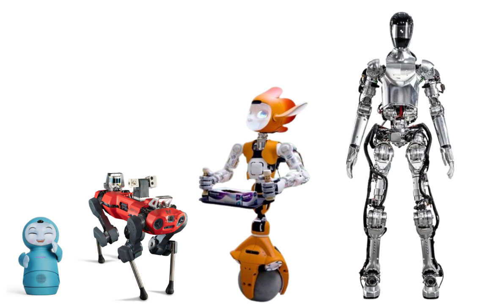
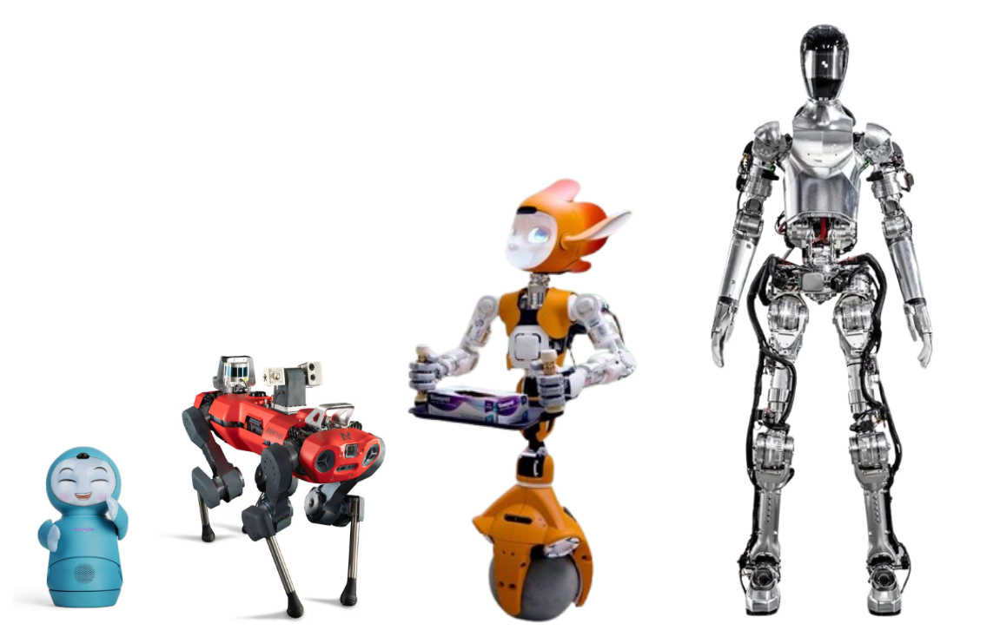

Optimizing Emotion Recognition in Social Robots: The Role of Physical Characteristics
Abstract
This study explores emotion recognition challenges in social robotics, focusing on how robot characteristics and human attributes affect estimation accuracy. It introduces a novel methodology using 3D technologies to generate synthetic datasets simulating diverse human-robot interactions. The research investigates the impact of robot physical properties (yaw angles, distances, sizes) on emotion estimation and examines potential biases from human attributes (age, gender, race). By analyzing these factors' interplay, the study aims to enhance emotion recognition systems' reliability and fairness, improve benchmarks, and guide future training efforts, ultimately contributing to the development of more intuitive and responsive social robots.
Project Origin
This project was born from the observation that traditional computer vision face algorithms, such as Haar Cascade, often fail when applied to small robots. The unique perspectives and limitations of these robots create challenges in accurately detecting and interpreting human facial expressions.
 

The images above illustrate the concept: on the left, we see the diversity of human faces created using MetaHuman technology, and on the right, the various sizes of robots considered in this study.
The MetaHumanAfterAll Dataset
To address the limitations of existing datasets and better understand the challenges faced by robots of different sizes, we created the "MetaHumanAfterAll" dataset. This synthetic dataset comprises approximately 14,000 images of diverse virtual humans displaying seven basic emotions. Key features include:
- 66 Synthetic Humans with diverse attributes
- Three angles: -45°, 0°, and 45°
- Three distances: 50 cm, 100 cm, and 200 cm
- Four robot sizes: babySize (42.0 cm), dogSize (89.0 cm), childSize (120.0 cm), and adultSize (170.0 cm)
This dataset provides a comprehensive resource for training and evaluating emotion recognition models in human-robot interaction scenarios.
Study Overview
Using the MetaHumanAfterAll dataset, we investigated how robot physical characteristics affect the quality of social cue estimation in human-robot interactions. We analyzed the effects of robot size, angle, and distance on emotion detection accuracy.
Key Findings:
- Larger robots (adultSize category) consistently outperform smaller ones in emotion detection accuracy.
- Optimal configurations for emotion detection include moderate distances (200 cm) and frontal angles (0 degrees).
- Complex interactions exist between robot size, distance, and angle, affecting model performance.
Visualizations:
This study provides valuable insights for the design and deployment of social robots, emphasizing the need to consider physical characteristics in optimizing emotion detection capabilities.